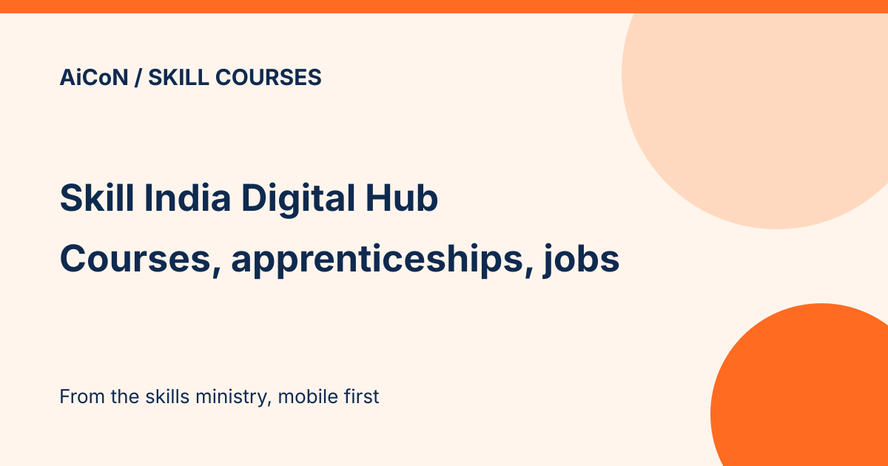

Skill India Digital Hub: online skill courses, apprenticeships and jobs
Skill India Digital Hub (SIDH) is a mobile-first platform from the Ministry of Skill Development and Entrepreneurship for skill courses, apprenticeships and jobs. Its own page is titled "Learn Free Online Courses with SIDH". The platform and mobile app launched in September 2023, according to a PIB release from July 2024.

What is SIDH?
PIB's 22 July 2024 release describes it as a platform to skill, re-skill and upskill digitally, with industry-relevant courses, apprenticeship and job opportunities, and entrepreneurship support. It has a learning management system, portable verified credentials and a multilingual choice.
What courses does it name?
The July 2024 PIB reply lists examples such as Python with Advanced AI, Generative AI, Data Analytics Essentials, Cybersecurity Essentials, Introduction to Data Science, Kisan Drone Operator, EV Service Technician and Bio-waste Management. The course list changes over time, so check the current catalogue.
Linked to other government services
The 2024 PIB release says SIDH is integrated with UIDAI, e-Shram, NCS and DigiLocker, so learners can earn, bank and redeem the credits they earn through courses or work experience.
A careful checklist
- Open skillindiadigital.gov.in and check the address before signing in.
- Open a course and read the fee, duration, mode (online or classroom) and certificate details.
- Check whether the certificate is recognised for your goal, such as a job or a further course.
- Verify any fee against the official course details and payment route. Do not pay an intermediary just because they claim to represent SIDH.
Frequently asked questions
Is every course free?
The SIDH page says "free online courses". The pages we read do not list which ones, so check each course.
Does it help find jobs?
PIB says it offers apprenticeship and job opportunities and a digital job exchange. We did not test this.
What changed since this post?
SIDH home, its free-online-courses page and the 22 July 2024 PIB release were checked on 12 October 2026. The two SIDH pages returned titles only, not course listings or fee details. The free wording is therefore only the site's own page title, not confirmation that every course is free. Platform features and course examples above come from the dated PIB release and may have changed. No signup, enrolment, certificate, job search or app test performed.
Sources: SIDH free online courses page, SIDH home, PIB release, 22 July 2024. Checked 12 October 2026. This is an AiCoN explainer, not a government publication.